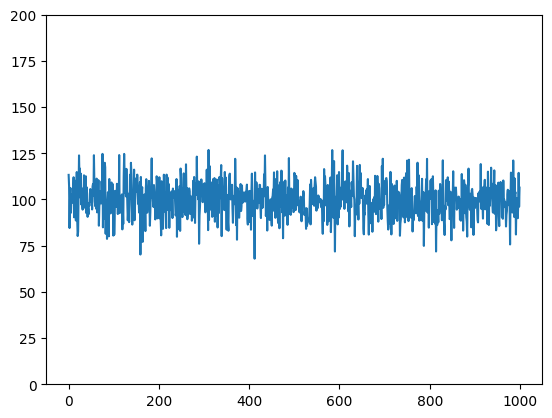
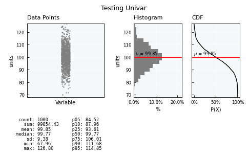
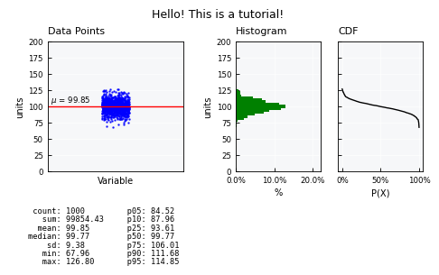
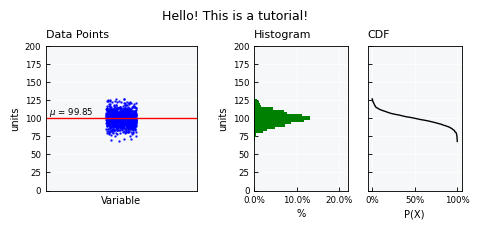
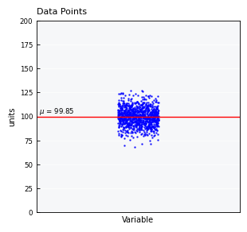
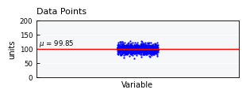

Univariate data - the basics#
This tutorial focuses on working with basic univariate data management and analysis using plans.
Notebook setup#
For users running this tutorial as a Jupyter Notebook, this cell must be executed first:
import sys
from pathlib import Path
import pprint
import numpy as np
import pandas as pd
import matplotlib.pyplot as plt
# Install `plans` in `google.colab`.
# Use `pip install plans` for other environments.
if "google.colab" in sys.modules:
import os
os.system(f"{sys.executable} -m pip install -q plans")
# This avoids warnings related to uninstalled fonts
import logging
# Set the matplotlib font manager logger to only show errors (hides warnings)
logging.getLogger('matplotlib.font_manager').setLevel(logging.ERROR)
# define output folder
OUTPUT_DIR = Path("outputs/univariate")
OUTPUT_DIR.mkdir(parents=True, exist_ok=True)
print(f"Outputs will be saved to: ./{OUTPUT_DIR}")
Outputs will be saved to: ./outputs/univariate
The Univar object#
The Univar object is a very primitive class that lives under plans.analyst module.
This object is a child from the DataSet object that lives in plans.root module.
The Univar stores all core methods for working with univariate data.
Import Univar object:
from plans.analyst import Univar
Create an instance of the Univar:
unv = Univar(name="Testing Univar", alias="uni-tst")
Check out the variable type:
print(type(unv))
<class 'plans.analyst.Univar'>
Handle data attributes#
Inspect state for major attributes:
print(unv)
[Testing Univar (uni-tst)]
Univar (DS): <class 'plans.analyst.Univar'>
field value
name Testing Univar
alias uni-tst
size NaN
color blue
source NaN
description NaN
units units
file_data NaN
Data:
None
Edit attributes directly and inspect again
unv.description = "A testing univariate for a tutorial"
unv.units = "cm"
print(unv)
[Testing Univar (uni-tst)]
Univar (DS): <class 'plans.analyst.Univar'>
field value
name Testing Univar
alias uni-tst
size NaN
color blue
source NaN
description A testing univariate for a tutorial
units cm
file_data NaN
Data:
None
Working with data#
Create synthetic gaussian dataset#
Lets first make a synthetic gaussian dataset using numpy.random and save it to a CSV file using pandas.
# make synthetic gaussian data
np.random.seed(10) # ensure reproducibility
v = np.random.normal(loc=100, scale=10, size=1000)
df = pd.DataFrame({"variable": v})
# Export CSV file
file_csv = OUTPUT_DIR / "univariate_gauss.csv"
df.to_csv(file_csv, sep=";", index="False")
print(f"Saved to: {file_csv}")
Saved to: outputs/univariate/univariate_gauss.csv
The whole dataset looks like this:
# get simple visualization
plt.plot(df.index, df['variable'])
plt.ylim([0, 200])
plt.show()

Loading data from the CSV file#
Call the .load_data() method for loading from CSV file:
# reset the uv variable
unv = Univar(name="Testing Univar", alias="uni-tst")
unv.load_data(
file_data=file_csv, # file path
input_varfield="variable", # name of column/field
in_sep=";", # input separator
)
Data is stored in the .data attribute as a pandas.DataFrame:
unv.data
| v | |
|---|---|
| 0 | 113.315865 |
| 1 | 107.152790 |
| 2 | 84.545997 |
| 3 | 99.916162 |
| 4 | 106.213360 |
| ... | ... |
| 995 | 89.856608 |
| 996 | 96.681723 |
| 997 | 114.406974 |
| 998 | 96.097821 |
| 999 | 106.424506 |
1000 rows × 1 columns
Access computed metadata#
After loading data, some useful attributes are computed automatically.
Basic statistics are stored in .stats_df as a pandas.DataFrame:
unv.stats_df
| statistic | value | |
|---|---|---|
| 0 | count | 1000.000000 |
| 1 | sum | 99854.433644 |
| 2 | mean | 99.854434 |
| 3 | sd | 9.379578 |
| 4 | min | 67.955987 |
| 5 | p01 | 78.678389 |
| 6 | p05 | 84.521828 |
| 7 | p10 | 87.959449 |
| 8 | p20 | 92.072856 |
| 9 | p25 | 93.609900 |
| 10 | p40 | 97.618150 |
| 11 | p50 | 99.765252 |
| 12 | p60 | 102.116821 |
| 13 | p75 | 106.010132 |
| 14 | p80 | 107.549608 |
| 15 | p90 | 111.678248 |
| 16 | p95 | 114.846091 |
| 17 | p99 | 122.426391 |
| 18 | max | 126.799103 |
Data frequencies are stored in .freq_df as a pandas.DataFrame:
unv.freq_df
| Percentiles | Exceedance | Frequency | Empirical Probability | Values | |
|---|---|---|---|---|---|
| 0 | 0 | 100 | 1 | 0.001 | 67.955987 |
| 1 | 1 | 99 | 0 | 0.000 | 78.678389 |
| 2 | 2 | 98 | 0 | 0.000 | 80.584361 |
| 3 | 3 | 97 | 1 | 0.001 | 82.311344 |
| 4 | 4 | 96 | 0 | 0.000 | 83.409942 |
| ... | ... | ... | ... | ... | ... |
| 95 | 95 | 5 | 2 | 0.002 | 114.846091 |
| 96 | 96 | 4 | 2 | 0.002 | 116.115753 |
| 97 | 97 | 3 | 0 | 0.000 | 118.178726 |
| 98 | 98 | 2 | 0 | 0.000 | 120.658142 |
| 99 | 99 | 1 | 3 | 0.003 | 122.426391 |
100 rows × 5 columns
Data weibull CDF is stored in .weibull_df as a pandas.DataFrame:
unv.weibull_df
| Data | P(X) | F(X) | |
|---|---|---|---|
| 0 | 126.799103 | 0.000999 | 0.999001 |
| 1 | 126.716851 | 0.001998 | 0.998002 |
| 2 | 126.625775 | 0.002997 | 0.997003 |
| 3 | 124.676511 | 0.003996 | 0.996004 |
| 4 | 124.653251 | 0.004995 | 0.995005 |
| ... | ... | ... | ... |
| 995 | 74.885309 | 0.995005 | 0.004995 |
| 996 | 71.849387 | 0.996004 | 0.003996 |
| 997 | 71.839988 | 0.997003 | 0.002997 |
| 998 | 70.204032 | 0.998002 | 0.001998 |
| 999 | 67.955987 | 0.999001 | 0.000999 |
1000 rows × 3 columns
Visualizations#
Most plans. objects comes with built-in methods for getting visualizations, both inline and figure output.
See also
Check out more about visualizations on the Visualizations - the basics tutorial.
Standard visualization#
Get the standard visual using the .view() method
unv.view()

Fine-tuning visuals#
Use the .view_specs keys for fine tuning the visual. Example of some possibilities:
# Y axis range
unv.view_specs["range"] = [0, 200]
# Scatter
unv.view_specs["scatter_factor"] = 2 # occupy more space
# Color
unv.view_specs["color"] = "blue"
unv.view_specs["color_hist"] = "green"
# Decorations
unv.view_specs["plot_mean"] = False
unv.view_specs["plot_mean_data"] = True
unv.view_specs["title"] = "Hello! This is a tutorial!"
# call view again
unv.view()

Layouts available#
List available layout keys:
print(unv.layouts.keys())
dict_keys(['full', 'mini', 'simple', 'simple-shallow', 'default'])
unv.view_specs["layout"] = "mini"
unv.view()

unv.view_specs["layout"] = "simple"
unv.view()

unv.view_specs["layout"] = "simple-shallow"
unv.view_specs["title"] = None
unv.view()

Analysis methods#
Normality assessment#
Assess if the data is normal via the .get_normality() method:
df = unv.get_normality(clevel=0.95)
df
| Test | Statistic | p-value | is_normal | Confidence | |
|---|---|---|---|---|---|
| 0 | Kolmogorov-Smirnov | 0.013838 | 0.989545 | True | 0.95 |
| 1 | Shapiro-Wilk | 0.998710 | 0.695039 | True | 0.95 |
| 2 | D'Agostino-Pearson | 0.477945 | 0.787436 | True | 0.95 |
Weibull distribution#
df = unv.get_cdf_weibull()
df
| Data | P(X) | F(X) | |
|---|---|---|---|
| 0 | 126.799103 | 0.000999 | 0.999001 |
| 1 | 126.716851 | 0.001998 | 0.998002 |
| 2 | 126.625775 | 0.002997 | 0.997003 |
| 3 | 124.676511 | 0.003996 | 0.996004 |
| 4 | 124.653251 | 0.004995 | 0.995005 |
| ... | ... | ... | ... |
| 995 | 74.885309 | 0.995005 | 0.004995 |
| 996 | 71.849387 | 0.996004 | 0.003996 |
| 997 | 71.839988 | 0.997003 | 0.002997 |
| 998 | 70.204032 | 0.998002 | 0.001998 |
| 999 | 67.955987 | 0.999001 | 0.000999 |
1000 rows × 3 columns
Gumbel distribution#
The method .get_cdf_gumbel() performs a full assessment for the Gumbel distribution.
Warning
This method assumes the data is a collection of maxima values.
dc_gumbel = unv.get_cdf_gumbel()
View model results:
df = dc_gumbel["Metadata"]
df
| Metadata | Value | |
|---|---|---|
| 0 | N | 1000 |
| 1 | Gumbel a | 95.633125 |
| 2 | Gumbel b | 7.313227 |
| 3 | KS-test s-value | 0.076734 |
| 4 | KS-test p-value | 0.000014 |
| 5 | KS-test Is Gumbel (NullH) | False |
| 6 | QQ-plot c0 | 2.405764 |
| 7 | QQ plot c1 | 0.975998 |
| 8 | QQ-plot r2 | 0.970525 |
View data:
df = dc_gumbel["Data"]
df
| v | Rank | P(X)_Empirical | P(X)_Weibull | T(X)_Weibull | P(X)_Gringorten | P(X)_Gumbel | T(X)_Gumbel | T(X)_Gumbel_SE90 | T(X)_Gumbel_P05 | T(X)_Gumbel_P95 | |
|---|---|---|---|---|---|---|---|---|---|---|---|
| 0 | 126.799103 | 1 | 0.001 | 0.000999 | 1001.000000 | 0.000560 | 0.014001 | 71.423884 | 1.784416 | 56.068652 | 91.022575 |
| 1 | 126.716851 | 2 | 0.002 | 0.001998 | 500.500000 | 0.001560 | 0.014158 | 70.630695 | 1.780045 | 55.480053 | 89.956708 |
| 2 | 126.625775 | 3 | 0.003 | 0.002997 | 333.666667 | 0.002560 | 0.014334 | 69.762759 | 1.775206 | 54.835575 | 88.791140 |
| 3 | 124.676511 | 4 | 0.004 | 0.003996 | 250.250000 | 0.003560 | 0.018671 | 53.557703 | 1.671825 | 42.715790 | 67.184470 |
| 4 | 124.653251 | 5 | 0.005 | 0.004995 | 200.200000 | 0.004559 | 0.018730 | 53.389231 | 1.670594 | 42.588833 | 66.961535 |
| ... | ... | ... | ... | ... | ... | ... | ... | ... | ... | ... | ... |
| 995 | 74.885309 | 996 | 0.996 | 0.995005 | 1.005020 | 0.995441 | 1.000000 | 1.000000 | 1.172041 | 1.000000 | 1.000000 |
| 996 | 71.849387 | 997 | 0.997 | 0.996004 | 1.004012 | 0.996440 | 1.000000 | 1.000000 | 1.328611 | 1.000000 | 1.000000 |
| 997 | 71.839988 | 998 | 0.998 | 0.997003 | 1.003006 | 0.997440 | 1.000000 | 1.000000 | 1.329099 | 1.000000 | 1.000000 |
| 998 | 70.204032 | 999 | 0.999 | 0.998002 | 1.002002 | 0.998440 | 1.000000 | 1.000000 | 1.414199 | 1.000000 | 1.000000 |
| 999 | 67.955987 | 1000 | 1.000 | 0.999001 | 1.001000 | 0.999440 | 1.000000 | 1.000000 | NaN | NaN | NaN |
1000 rows × 11 columns
View return periods T(X):
df =dc_gumbel["Data_T(X)"]
df
| T(X)_Gumbel | v | v_P25 | v_P75 | v_P05 | v_P95 | |
|---|---|---|---|---|---|---|
| 0 | 2 | 98.313631 | 98.129944 | 98.497319 | 97.865427 | 98.761836 |
| 1 | 3 | 102.235039 | 102.001629 | 102.468448 | 101.665511 | 102.804566 |
| 2 | 4 | 104.744783 | 104.469400 | 105.020167 | 104.072837 | 105.416730 |
| 3 | 5 | 106.602640 | 106.293272 | 106.912009 | 105.847769 | 107.357511 |
| 4 | 6 | 108.080229 | 107.742617 | 108.417842 | 107.256442 | 108.904016 |
| ... | ... | ... | ... | ... | ... | ... |
| 994 | 996 | 146.118235 | 144.961888 | 147.274581 | 143.296704 | 148.939765 |
| 995 | 997 | 146.125577 | 144.969068 | 147.282087 | 143.303650 | 148.947505 |
| 996 | 998 | 146.132913 | 144.976241 | 147.289584 | 143.310589 | 148.955236 |
| 997 | 999 | 146.140240 | 144.983406 | 147.297074 | 143.317521 | 148.962960 |
| 998 | 1000 | 146.147561 | 144.990565 | 147.304557 | 143.324446 | 148.970676 |
999 rows × 6 columns